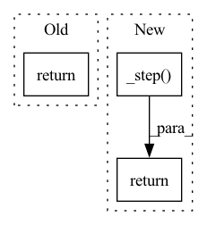

Pattern ID :10157
Before Change
) -> torch.Tensor:
x, y = batch
loss = F.cross_entropy(self(x), y)
return loss
// pyre-fixme[3]: TODO(aivanou): Figure out why oss pyre can identify type but fb cannot.
def configure_optimizers(self):After Change
def training_step(
self, batch: Tuple[torch.Tensor, torch.Tensor], batch_idx: int
) -> torch.Tensor:
return self._step( "train", self.train_acc, batch, batch_idx)
// pyre-fixme[14]
def validation_step(
self, val_batch: Tuple[torch.Tensor, torch.Tensor], batch_idx: intIn pattern: SUPERPATTERN
Frequency: 3
Non-data size: 3
Instances Fragment ID: 35922333
Project Name: pytorch/torchx
Commit Name: 581ec2ecab7a81c2560c18c9b7a83e0edc178f45
Time: 2021-08-11
Author: aivanou@fb.com
File Name: examples/apps/lightning_classy_vision/model.py
M Class Name: TinyImageNetModel
N Class Name: TinyImageNetModel
M Method Name: training_step(3)
N Method Name: training_step(3)
M Parent Class: pl.LightningModule
N Parent Class: pl.LightningModule
M File Name: examples/apps/lightning_classy_vision/model.py
N File Name: examples/apps/lightning_classy_vision/model.py
M Start Line: 43
M End Line: 45
N Start Line: 46
N End Line: 46
Before Change
self.logger.experiment.add_figure(
f"Validation prediction of item 0 in batch {batch_idx}", fig, global_step=self.global_step,
)
return log
def validation_epoch_end(self, outputs):
// loss loggingAfter Change
return self._epoch_end(outputs, label="train")
def validation_step(self, batch, batch_idx):
return self._step( batch, batch_idx, label="val", log_batch_idx=True)
def validation_epoch_end(self, outputs):
return self._epoch_end(outputs, label="val")
Fragment ID: 35922334
Project Name: jdb78/pytorch-forecasting
Commit Name: 1806e120498ddea1f0e04db08f8249ebe0b217b1
Time: 2020-06-20
Author: beitner.jan@bcg.com
File Name: temporal_fusion_transformer_pytorch/model/__init__.py
M Class Name: TemporalFusionTransformer
N Class Name: TemporalFusionTransformer
M Method Name: validation_step(3)
N Method Name: validation_step(3)
M Parent Class: pl.LightningModule
N Parent Class: pl.LightningModule
M File Name: temporal_fusion_transformer_pytorch/model/__init__.py
N File Name: temporal_fusion_transformer_pytorch/model/__init__.py
M Start Line: 431
M End Line: 443
N Start Line: 382
N End Line: 382
Before Change
self.logger.experiment.add_figure(
"Training prediction", fig, global_step=self.global_step,
)
return {
"loss": loss,
"log": tensorboard_logs,
"interpretation": interpretation,After Change
return torch.optim.Adam(self.parameters(), lr=self.hparams.learning_rate)
def training_step(self, batch, batch_idx):
return self._step( batch, batch_idx, label="train", log_batch_idx=False)
def on_after_backward(self):
if self.global_step % self.hparams.log_interval == 0 and self.hparams.log_interval > 0:
self._log_grad_flow(self.named_parameters()) Fragment ID: 35922335
Project Name: jdb78/pytorch-forecasting
Commit Name: 1806e120498ddea1f0e04db08f8249ebe0b217b1
Time: 2020-06-20
Author: beitner.jan@bcg.com
File Name: temporal_fusion_transformer_pytorch/model/__init__.py
M Class Name: TemporalFusionTransformer
N Class Name: TemporalFusionTransformer
M Method Name: training_step(3)
N Method Name: training_step(3)
M Parent Class: pl.LightningModule
N Parent Class: pl.LightningModule
M File Name: temporal_fusion_transformer_pytorch/model/__init__.py
N File Name: temporal_fusion_transformer_pytorch/model/__init__.py
M Start Line: 395
M End Line: 415
N Start Line: 372
N End Line: 372